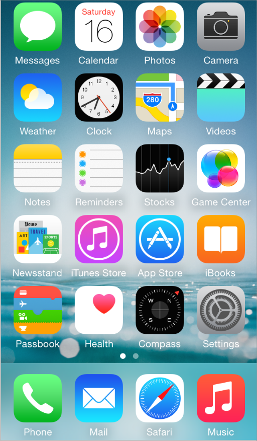
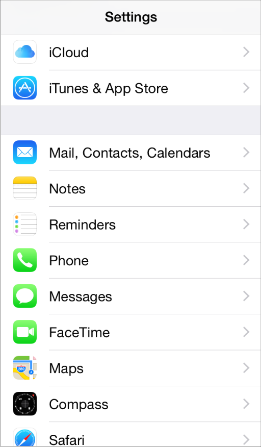

App Icon
Every app needs a beautiful, memorable app icon that attracts people in the App Store and stands out on their Home screen. iOS can use versions of the app icon in Game Center, search results, Settings, and to represent app-created documents.

For the best results, enlist the help of a professional graphic designer. An experienced graphic designer can help you develop an overall visual style for your app and apply that style to all the icons and images in it.
Use universal imagery that people will easily recognize. In general, avoid focusing on a secondary or obscure aspect of an element. For example, the Mail app icon uses an envelope, not a rural mailbox, a mail carrier’s bag, or a post office symbol.
Embrace simplicity. In particular, avoid cramming lots of different images into your icon. Find a single element that captures the essence of your app and express that element in a simple, unique shape. Add details cautiously. If an icon’s content or shape is overly complex, the details can become confusing and may appear muddy at smaller sizes.
Create an abstract interpretation of your app’s main idea. It rarely works well to use a photo or screenshot in an app icon because photographic details can be very hard to see at small sizes. Typically, it’s better to interpret reality in an artistic way, because doing so lets you emphasize the aspects of the subject that you want users to notice.
If you want to portray real substances, do it accurately. Icons that depict real objects should accurately replicate the characteristics of substances such as fabric, glass, paper, and metal, and convey the object’s weight and feel.
Make sure the app icon looks good on a variety of backgrounds. Don’t just test your icon on a light or dark background, because you can’t predict which wallpaper people will choose.
Avoid transparency. An app icon should be opaque. If the icon’s boundaries are smaller than the recommended sizes—or you use transparency to create “see-through” areas—the resulting icon can appear to float on a dark background, which tends to look especially unattractive on the beautiful wallpapers that users choose.
Don’t use iOS interface elements in your artwork. You don’t want users to confuse your icons or images with the iOS UI.
Don’t use replicas of Apple hardware products in your artwork. The symbols that represent Apple products are copyrighted and can’t be reproduced in your icons or images. In general, it’s a good idea to avoid replicas of any specific devices in your artwork, because these designs change frequently and icons that are based on them can quickly look dated.
Don’t reuse iOS app icons in your interface. It can be confusing to users to see the same icon used to mean slightly different things in multiple locations throughout the system.
Create different sizes of the app icon for different devices. You want to make sure that your app icon looks great on all the devices you support. For device-specific measurements, see Table 45-1.
When iOS displays an app icon on the Home screen of a device, it automatically applies a mask that rounds the corners. Make sure your icon has 90° corners so it looks good after the mask is applied. For example:
Create a large version of your app icon for display in the App Store. Although it’s important that this version be instantly recognizable as your app icon, it can be subtly richer and more detailed. There are no visual effects added to this version of your app icon.
As shown in Table 45-1, the large version of your app icon should measure 1024 x 1024 pixels and be named iTunesArtwork@2x. (If necessary to support some @1x devices, create a version that measures 512 x 512 pixels and name it iTunesArtwork.) For some additional information about this version of the app icon, see Platform Version Information.
If you’re developing an app for ad-hoc distribution (that is, to be distributed in-house only, not through the App Store), you must also provide the large versions of your app icon. This icon identifies your app in iTunes.
Document Icons
If your iOS app creates documents of a custom type, you want users to be able to recognize these documents at a glance. You don't need to design a custom icon for this purpose because iOS uses your app icon to create document icons for you.
Spotlight and Settings Icons
Every app should supply a small icon that iOS can display when the app name matches a term in a Spotlight search. Apps that supply settings should also supply a small icon to identify them in the built-in Settings app.
These icons should clearly identify your app so that people can recognize it in a list of search results or in Settings. For example, the icons of the built-in apps are easy to discern in Settings, even though the icons are small:

As with app icons, you can name these small icons anything you want, because iOS chooses an icon based on whether its size is appropriate for the intended usage.
For all devices, supply separate icons for Spotlight search results and Settings. If you don’t provide these icons, iOS might shrink your app icon for display in these locations. See Table 45-1 for details about specific sizes.
Copyright © 2016 Apple Inc. All rights reserved. Terms of Use | Privacy Policy | Updated: 2016-03-21